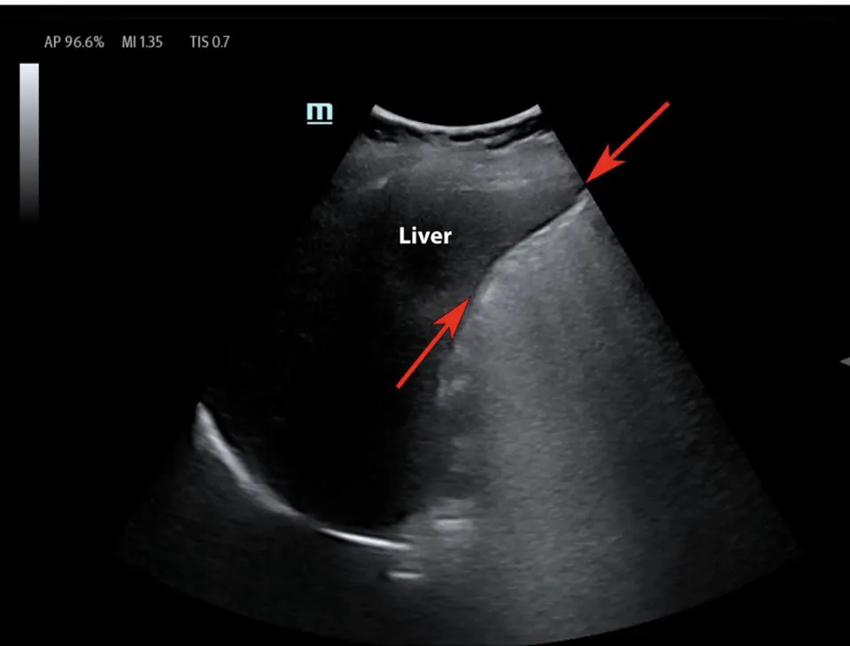
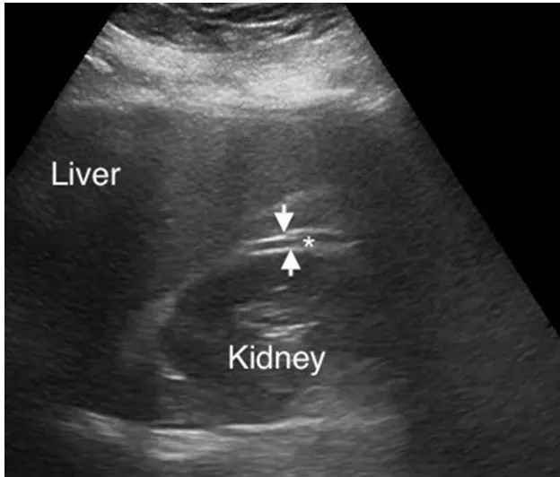
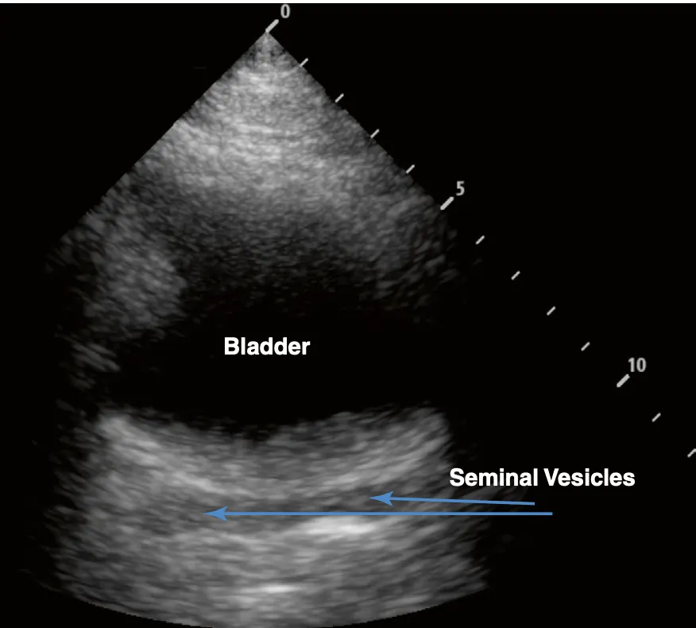

Unstable + positive
Move toward hemorrhage control
Activate trauma surgery and resuscitation pathways. Intraperitoneal fluid in a persistently unstable patient should not take a routine CT detour.
Four deliberate sweeps. One question: is there free fluid where it should not be? FAST accelerates decisions in unstable trauma. It does not clear the stable patient.
Continue to the eFAST lung supplement →
Department teaching source: Alexander Belaia, MD · Montefiore Wakefield Ultrasound Site Director · August 2026
FAST detects free fluid. It does not identify the injured organ, grade injury, reliably quantify blood, or exclude retroperitoneal and hollow-viscus injury.
Activate trauma surgery and resuscitation pathways. Intraperitoneal fluid in a persistently unstable patient should not take a routine CT detour.
Search the chest, pelvis, retroperitoneum, long bones, and nonhemorrhagic causes. Repeat FAST when physiology changes or after resuscitation.
CT with IV contrast usually determines source, grade, and operative, angiographic, or nonoperative management.
Use mechanism, examination, trajectory, labs, and clinical course. Obtain CT when meaningful injury remains plausible.
Early bleeding, low-volume hemoperitoneum, retroperitoneal injury, and bowel injury can all produce a negative FAST. The most dangerous interpretation error is false reassurance.
Morison pouch, caudal liver tip, superior paracolic gutter, and subphrenic space.
Subphrenic and perisplenic spaces. The probe belongs higher and farther posterior.
Posterior and lateral to the bladder in transverse and sagittal planes.
Subxiphoid, parasternal, or apical. Use the window that answers the question.
Fresh blood is often anechoic. It forms a sharp stripe or wedge, lacks a defined wall, and conforms to the space. Clotted blood may be hypoechoic or echogenic.
Use the liver as the window. Fan through the hepatorenal interface. Then slide caudad until the liver tip and superior paracolic gutter are fully seen.
Fluid may appear in Morison pouch, around the liver tip, or above the liver. Do not let one clean still frame substitute for a sweep.
Reach posteriorly. Use the spleen as the target. Sweep the subphrenic surface, the perisplenic space, and the inferior splenic tip.
The spleen is smaller, higher, and less forgiving than the liver. Fluid is often around or above the spleen, not neatly between spleen and kidney.
Indicator to the patient's right. Fan through the full bladder. Look posteriorly and along both lateral bladder margins.
Rotate 90 degrees. Sweep side to side. Inspect the pouch of Douglas in women and the rectovesical pouch in men.
Trace simple pelvic fluid can be physiologic in reproductive-age patients. Volume, distribution, trauma mechanism, pregnancy status, and the other windows determine its weight.
Place the probe nearly flat under the xiphoid and aim toward the left shoulder. Use the liver as the acoustic window. Follow your department's cardiac orientation.
Look for fluid between the liver and right ventricle and around the heart. In penetrating chest trauma, a positive view demands an immediate surgical response.
The operator who saves one beautiful frame can still miss the blood. Fan, sweep, and slide through every potential space. The cine loop is the proof that you interrogated the window.

The double-line sign follows the kidney and may be symmetric. True free fluid forms a cleaner, sharper pocket in the potential space.

A thin dark line at an organ boundary can imitate fluid. Sweep through it. Artifact will not expand into a three-dimensional collection.

Lobulated structures posterior to the male bladder are not free fluid. Follow their defined tissue architecture through the sweep.
Overgain behind the bladder can create false black space. Lower gain and change angle. Real fluid persists as a coherent collection.
Hemoperitoneum is not always jet black. Clot can be gray and heterogeneous. Use the expected space, asymmetric separation, and the full cine sweep.
Ascites, dialysate, urine, and gynecologic fluid can produce a positive exam. Trauma context raises the stakes, but the image alone does not name the fluid.
Document the limitation. Change probe, depth, gain, position, or cardiac window. If the clinical question remains, use another test.
Reading is not scanning. Place the probe, call the department clips cold, decide with the physiology, and name every space in the sweep. The card remembers your best run on this device.
INDICATION: Trauma / hypotension EXAM: Focused Assessment with Sonography in Trauma VIEWS: Pericardial, RUQ, LUQ, pelvic transverse, pelvic sagittal QUALITY: Adequate / Limited by [body habitus, bowel gas, pain, dressings] FINDINGS: - Pericardial fluid: Absent / Present - RUQ intraperitoneal fluid: Absent / Present at [location] - LUQ intraperitoneal fluid: Absent / Present at [location] - Pelvic intraperitoneal fluid: Absent / Present at [location] INTERPRETATION: Negative / Positive / Indeterminate FAST INTEGRATION: Findings communicated to [team] and integrated with hemodynamics, examination, and trauma pathway. IMAGES: Representative stills and cine clips archived.
State the physiology, window, fluid location, exam quality, response to resuscitation, and whether the result is new on repeat imaging.
Add bilateral anterior lung views and posterolateral bases. Open the lung supplement for departmental clips, M-mode interpretation, presentation mode, and a short drill.